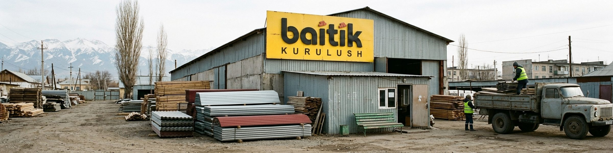
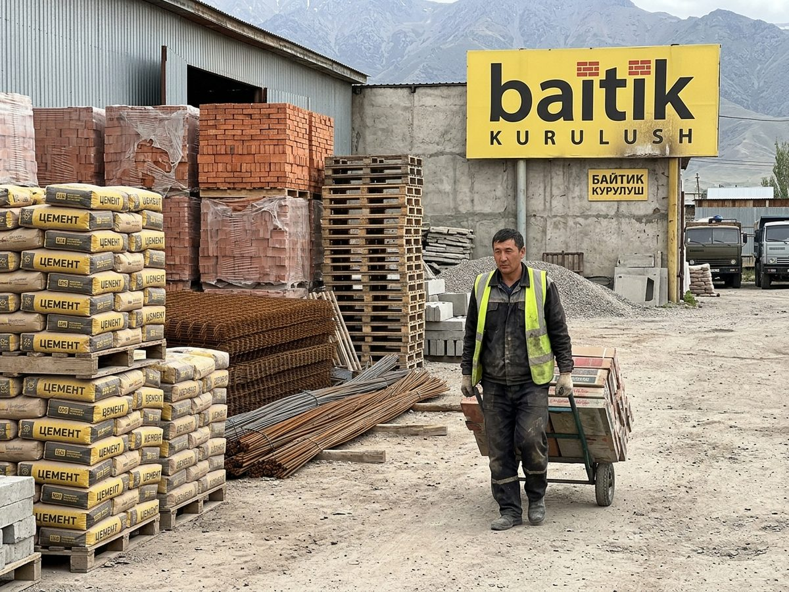
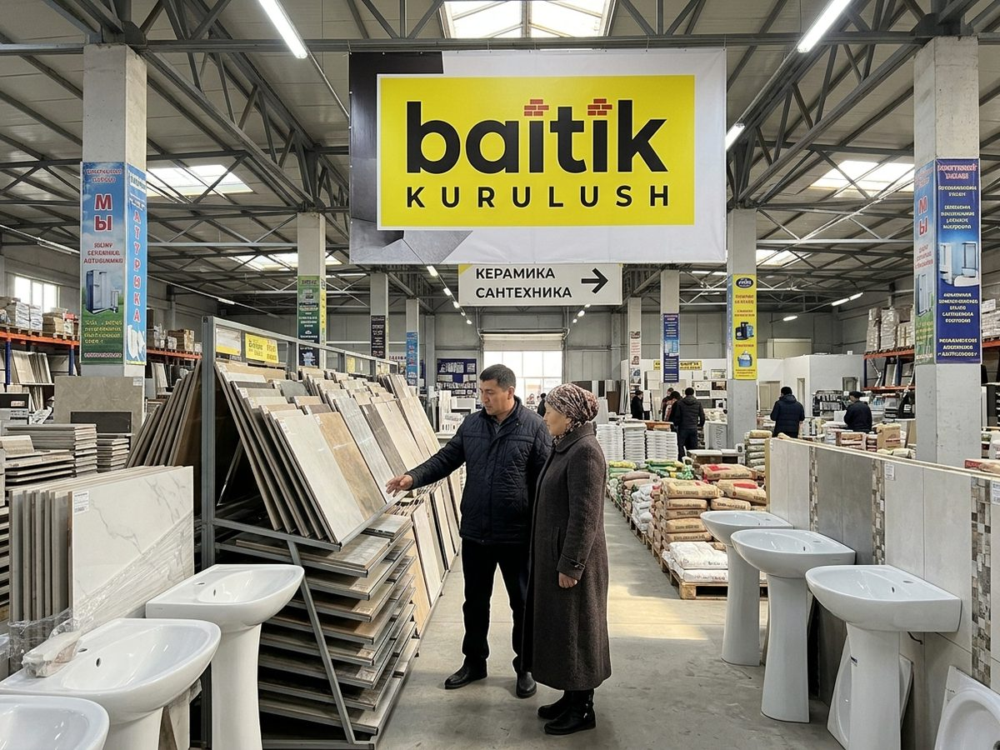
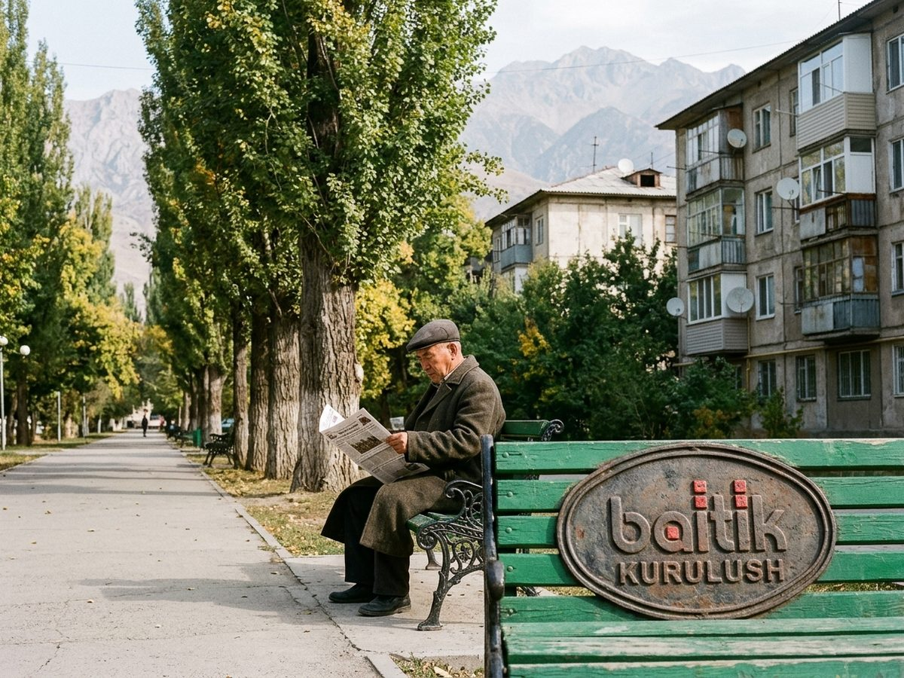

Baitik Kurulush
Цемент «Ак-Кыр» М400: последняя партия до весны по старой цене.
♥ 59 · Comment · Share
EVERYTHING FOR BUILDING. Delivery by our own lorries!
The last batch before spring.
Цемент «Ак-Кыр» М400: последняя партия до весны по старой цене.
♥ 59 · Comment · ShareThe last batch before spring.
Цемент «Ак-Кыр» М400: последняя партия до весны по старой цене.
♥ 59 · Comment · ShareBaitik Kurulush, the building-supply chain of Talas, since 1996. Ak-Kyr cement, roofing iron, timber, Turkish and Chinese tiles, plumbing and paint; 22 lorries for delivery; building-materials loans through Talasbank. Seven stores, the largest the 4,000 m² Baitik Mega. Yes, the green benches are ours.
«Байтик Курулуш» с 1996 года: цемент, кровельное железо, лес, плитка, сантехника, краска. Доставка. Самый большой магазин – «Байтик Мега».
7 locations on Kartalar: Talas 7.

The yard
Tiles and plumbing
Our green benchesNo reviews yet.